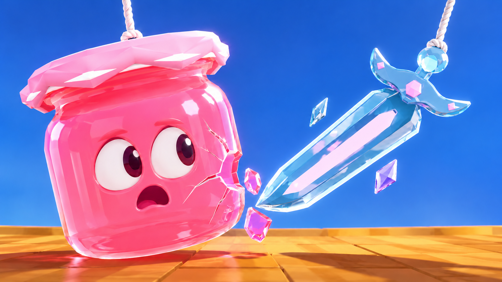
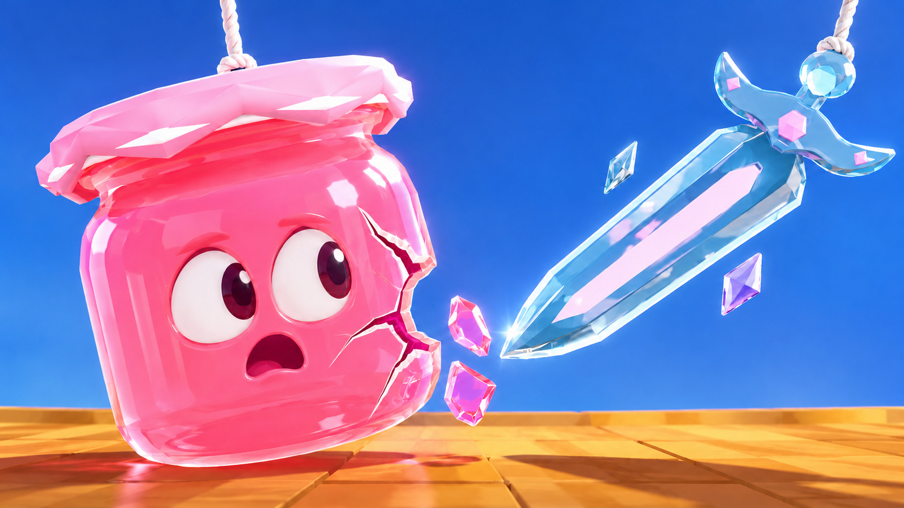
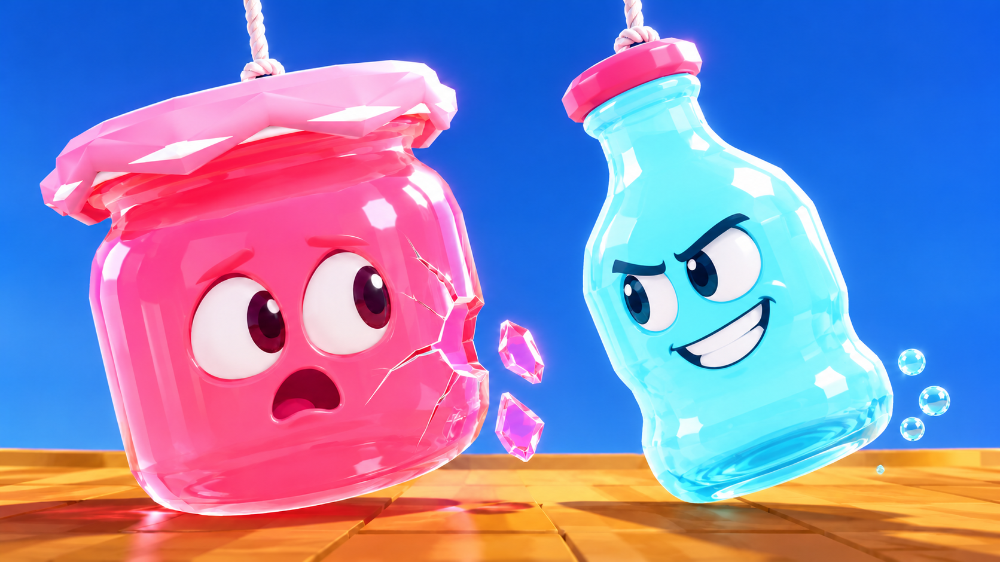
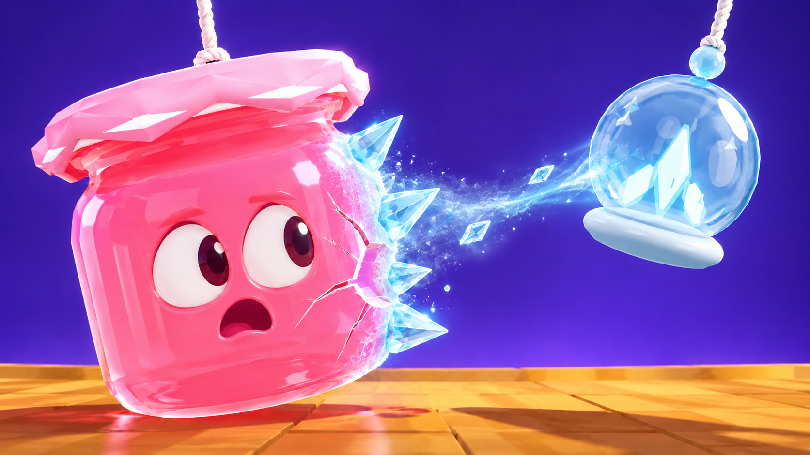
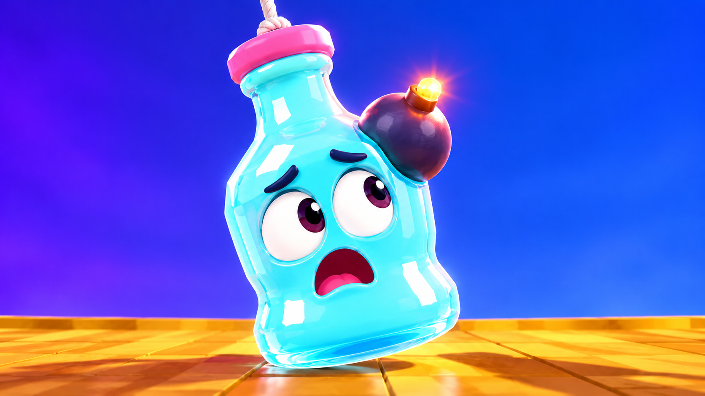
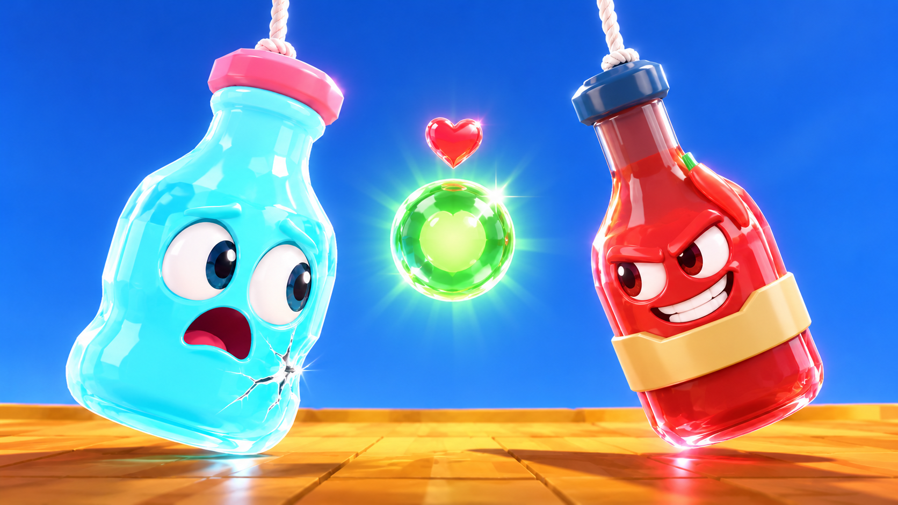
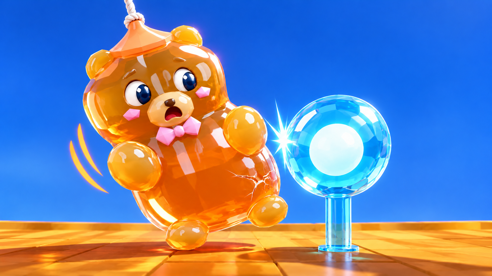

First checkpoint: 18 clicks / 644 impressions · 2.80% CTR. Provisional lead.
23 October 2026 · Two focused variations and five new story directions, including three concepts added after your request to explore further.







New designs have no measured results yet. 5–8% CTR is the goal, not a forecast. Faces and effects are marketing interpretations of the original glassies and existing mechanics. Bomb, heal and bumper concepts use the current round revamp; pair them with the matching published build.
Files and suggested comparisons · Primary research and source links · Prompts 01–04 · Prompts 05–07 · Native-file checks